Viện Trí tuệ nhân tạo · Trường Đại học Công nghệ, ĐHQGHN
Bài 1 Nhập môn Khoa học não bộ
Não bộ, tâm trí và nhận thức có phải là một? Vì sao tranh luận về chúng lại góp phần
khai sinh ngành TTNT?
Giảng viên
TS. Nguyễn Tuấn Phong
Đơn vị công tác: Viện Trí tuệ nhân tạo, Trường ĐHCN
Email: tuanphong at vnu dot edu dot vn
Nền tảng học vấn: Tiến sĩ Kỹ thuật (Dr.-Ing), Max-Planck-Institut für Informatik, Deutschland
Hướng nghiên cứu: Hệ tri thức, Mô hình ngôn ngữ lớn
Trước khi bắt đầu
Bạn thích chủ đề hay lĩnh vực nào?
Trình độ tiếng Anh của bạn tới đâu?
Bạn kỳ vọng học được gì ở môn này?
Làm ngay tại lớpMục "Pre-course anonymous survey" trên Canvas Portal.
Tổng quan buổi học
Phân biệt: Não bộ, tâm trí, nhận thức
Các lĩnh vực nghiên cứu não bộ
Lịch sử nghiên cứu não: từ Aristotle đến thế kỷ 17
Cách mạng nhận thức: từ 1956 đến nay
Những người tiên phong
Các câu hỏi liên ngành về não bộ
Giới thiệu môn học
1. Não bộ, tâm trí, nhận thức
Khởi động
Câu hỏi mở
Não bộ (brain) và tâm trí (mind) khác nhau ở chỗ nào?
Bạn định nghĩa nhận thức (cognition) thế nào?
Ba câu hỏi khó
Con chó có não bộ không?
Con chó có tâm trí không?
Con chó có nhận thức không?
Chó nhận ra chủ. Chó nhớ chỗ giấu xương. Chó mở nắp hộp.
Câu hỏi khó hơn
ChatGPT có nhận thức không?
Giới nghiên cứu nghĩ gì?
📖 Tự học
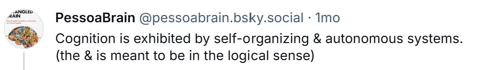
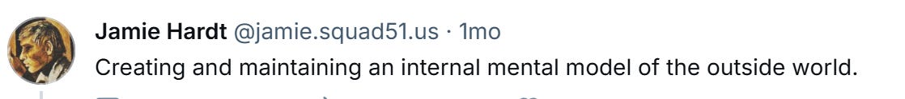
Ba nhà nghiên cứu, ba cách tiếp cận khác nhau: hệ tự tổ chức; khoảng giữa tri giác và hành
động; mô hình nội tại về thế giới. Chưa có một định nghĩa thống nhất.
Não bộ (brain)
Cơ quan nằm trong hộp sọ, điều phối nhiều chức năng của cơ thể.
Gồm hàng tỷ tế bào thần kinh và được hộp sọ bảo vệ.
Định nghĩa của Viện Ung thư Quốc gia Hoa Kỳ (NCI)
Tóm tắt Não bộ là một cơ quan vật chất: có
thể quan sát, đo đạc và chụp ảnh.
3 bộ phận lớn của não bộ
Bộ phận
Chức năng chính
Đại não cerebrum
Tư duy, học tập, giải quyết vấn đề, cảm xúc, trí nhớ, nói, đọc, viết, vận động chủ ý
Tiểu não cerebellum
Vận động tinh (các cử động nhỏ, chính xác), thăng bằng, tư thế
Thân não brain stem
Hô hấp, nhịp tim; nối não với tuỷ sống
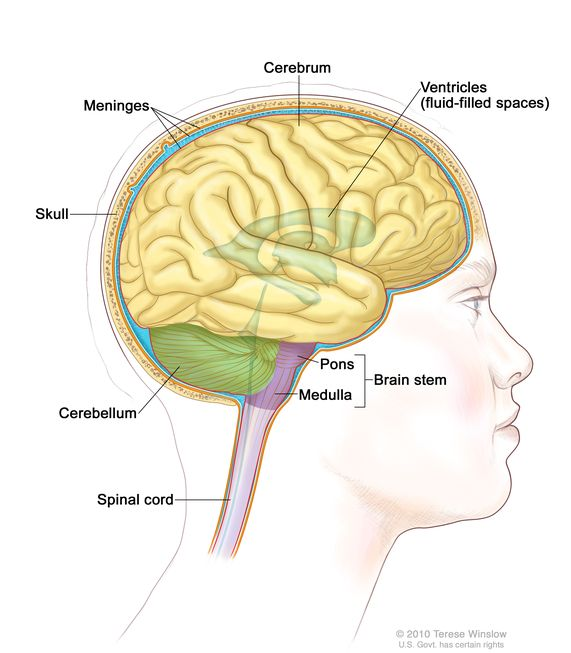
Tâm trí (mind)
Nghĩa rộng
Toàn bộ đời sống trí tuệ và tâm lý của một cơ thể sống: động cơ, cảm xúc, hành vi, tri
giác, nhận thức.
Nghĩa hẹp
Các hoạt động nhận thức: tri giác, chú ý, tư duy, giải quyết vấn đề, ngôn ngữ, học tập, trí nhớ.
Định nghĩa của Hội Tâm lý học Hoa Kỳ (American Psychological Association — APA)
Não bộ vs. Tâm trí
Não bộ chỉ một cơ quan vật chất. Có thể chỉ ra trên cơ thể.
Tâm trí chỉ một tập hợp các quá trình. Ta chỉ có thể suy ra từ biểu hiện.
Lưu ý Ví von “não = phần cứng, tâm trí = phần mềm” rất
tiện, nhưng không phải ai cũng đồng ý. John Searle phản đối cách hiểu này; tuần sau ta sẽ xem vì sao.
Nhận thức (Cognition)
Các quá trình giúp ta nhận biết và ý thức về thế giới: tri giác, hình
thành khái niệm, ghi nhớ, suy luận, phán đoán, tưởng tượng, giải quyết vấn đề.
Ý quan trọng nhất Theo cách phân chia truyền thống, tâm
trí gồm ba thành phần: nhận thức (cognition), cảm xúc (affect) và ý chí, động lực
(conation).
Theo định nghĩa của Hiệp hội Tâm lý học Hoa Kỳ (APA)
Nhận thức nằm trong tâm trí
Thành phần
Đang đi trong rừng, bạn thấy một vật dài, uốn khúc trên lối đi
Cognition nhận thức
Nhận ra: “Đó là một con rắn.”
Affect cảm xúc
Cảm thấy sợ hãi
Conation ý chí, động lực
Quyết định bỏ chạy
Ghi nhớ Theo cách chia này: tâm trí = nhận thức + cảm xúc
+ ý chí. Cả ba có thể diễn ra cùng lúc, nhưng khoa học nhận thức tách chúng ra để nghiên cứu.
Hai hướng nghiên cứu về nhận thức
📖 Tự học
"the action or faculty of knowing" — Từ điển Oxford
Hành động (action)
Nhận thức là một quá trình: cách ta tiếp nhận và hiểu sự vật.
Hướng của tâm lý học nhận thức.
Năng lực (faculty)
Tâm trí chia thành các năng lực; nhận thức là một trong số đó.
Hướng của Chomsky và của kiến trúc nhận thức.
Các khái niệm liên quan
📖 Tự học
Khái niệm
Gắn với
Nhận biết (awareness)
Ý thức (consciousness)
Trí thông minh (intelligence)
Hiểu nhanh, xử lý thông tin và suy luận sắc bén
Trực giác (intuition)
Thấu hiểu tức thời
Sự quen biết cá nhân (personal acquaintance)
Tri thức xã hội
Nhận ra (recognition)
Phân loại; xem lại và điều chỉnh
Kỹ năng (skill)
Suy luận; tri thức thực hành; chuyên môn
Hiểu (understanding)
Phán đoán, ra quyết định; lĩnh hội
Nguồn: bảng 1.1, sách Cognition, John G. Benjafield và cộng sự, chương
"Introduction".
Tóm tắt
Não bộ — một cơ quan trong cơ thể.
Tâm trí — tập hợp các quá trình tâm lý và trí tuệ.
Nhận thức — một trong ba thành phần của tâm trí, liên quan đến cách chúng ta tiếp nhận, hiểu và sử dụng thông tin.
Quan trọng Nhận thức ⊂ Tâm trí. Không phải Nhận thức = Tâm
trí.
2. Các lĩnh vực nghiên cứu não bộ
Ai nghiên cứu não bộ — và mỗi lĩnh vực đặt câu hỏi gì?
Khoa học não bộ
Nghiên cứu não bộ là một phần trọng tâm của khoa học thần kinh
(neuroscience).
Phạm vi: từ hoạt động của nơ-ron đến hoạt động của toàn bộ não.
Câu hỏi: não hoạt động và thay đổi ra sao khi ta học, lão hóa hoặc mắc bệnh?
Não là một cơ quan vật chất: có thể quan sát, đo đạc và chụp ảnh.
Nghiên cứu não ở nhiều cấp độ
Mỗi cấp độ trả lời một nhóm câu hỏi khác nhau.
Phân tử, tế bào
gen, protein
→
Mạch thần kinh
nơ-ron phối hợp
→
Nhận thức
tư duy, ngôn ngữ, trí nhớ
→
Lâm sàng
bệnh và phục hồi
Liên hệ với CNTT Giống như khi gỡ lỗi một hệ thống: mỗi
cấp độ cho ta một loại thông tin.
Tám nhánh của khoa học thần kinh
📖 Tự học
Nhánh
Nghiên cứu gì?
Phân tử & tế bào (molecular & cellular)
Gen và protein ảnh hưởng đến nơ-ron ra sao
Di truyền thần kinh (neurogenetics)
Gen ảnh hưởng đến hệ thần kinh ra sao
Sinh lý thần kinh (neurophysiology)
Hệ thần kinh hoạt động như thế nào
Giác quan (sensory)
Não tiếp nhận và xử lý tín hiệu giác quan
Hành vi (behavioral)
Hoạt động não liên quan đến hành vi ra sao
Khoa học thần kinh nhận thức(cognitive neuroscience)
Cơ chế thần kinh của tư duy, ngôn ngữ và trí nhớ
Phát triển (developmental)
Não hình thành và thay đổi theo thời gian
Lâm sàng (clinical)
Chẩn đoán, điều trị và phục hồi
Tâm lý học nhận thức (cognitive psychology)
Nghiên cứu: tri giác, chú ý, trí nhớ, suy luận, ngôn ngữ và ra quyết định.
Dữ liệu: câu trả lời của người tham gia — nhanh hay chậm, đúng hay sai.
Ví dụ Yêu cầu người tham gia nhớ một dãy số, rồi kiểm tra
họ còn nhớ được bao nhiêu số sau vài giây.
Khoa học thần kinh nhận thức (cognitive neuroscience)
Nghiên cứu: hoạt động của não tạo nên tri giác, trí nhớ, ngôn ngữ và ra quyết định như
thế nào.
Dữ liệu: kết quả hành vi kết hợp với EEG, fMRI hoặc dữ liệu tổn thương não.
Ví dụ Vẫn dùng bài nhớ dãy số, nhưng đo thêm hoạt động
của não trong lúc người tham gia ghi nhớ.
Khoa học nhận thức
Cùng một câu hỏi: Con người hiểu một câu nói như thế nào?
Tâm lý học quan sát cách con người trả lời.
Khoa học thần kinh nhận thức kết hợp hành vi với phép đo hoạt động não.
Ngôn ngữ học và TTNT phân tích ngôn ngữ và xây dựng mô hình.
Khoa học nhận thức (cognitive science) kết hợp các góc nhìn này.
Ba lĩnh vực liên hệ với nhau thế nào?
Sơ đồ đơn giản hóa; ranh giới giữa các lĩnh vực không hoàn toàn cố định.
Phân biệt ba lĩnh vực
Khoa học nhận thức là khung liên ngành rộng nhất.
Tâm lý học nhận thức chủ yếu dùng dữ liệu hành vi.
Khoa học thần kinh nhận thức kết hợp dữ liệu hành vi và dữ liệu não.
Lỗi hay gặp Đừng nói ngược: “Khoa học nhận thức là một
nhánh của khoa học thần kinh.”
Phân biệt bằng câu hỏi và dữ liệu
📖 Tự học
Hỏi gì
Dữ liệu dùng
Tâm lý học nhận thức
Các quá trình tâm trí hoạt động ra sao
Thời gian phản ứng, độ chính xác, câu trả lời
Khoa học thần kinh nhận thức
Cơ chế thần kinh của nhận thức
Ảnh não, EEG, hoạt động nơ-ron và dữ liệu hành vi
Khoa học nhận thức
Tâm trí và trí thông minh nói chung
Dữ liệu và mô hình từ nhiều ngành
Sáu ngành của khoa học nhận thức
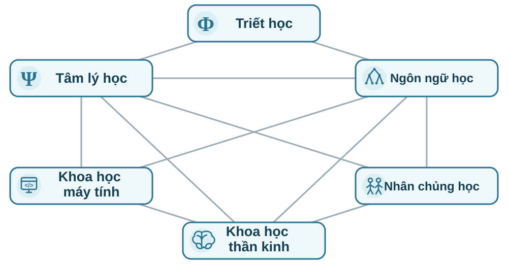
Quỹ Sloan (1978): mỗi đường nối biểu thị một hướng nghiên cứu
liên ngành đã tồn tại vào thời điểm đó.
Từ khoa học máy tính đến TTNT
TTNT là một nhánh của khoa học máy tính. Nó mô hình hóa những năng lực mà khoa học nhận
thức muốn giải thích.
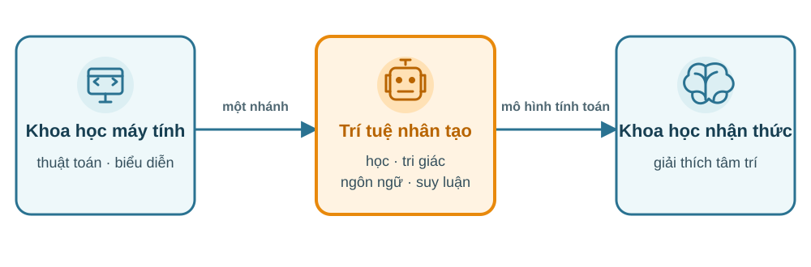
Mô hình TTNT giúp kiểm nghiệm các giả thuyết về tâm trí.
3. Lịch sử nghiên cứu não bộ
Từ suy đoán về chức năng đến quan sát và đo đạc.
Thế kỷ 4 TCN → thế kỷ 17
Steno: não bộ vẫn là một ẩn số
1665
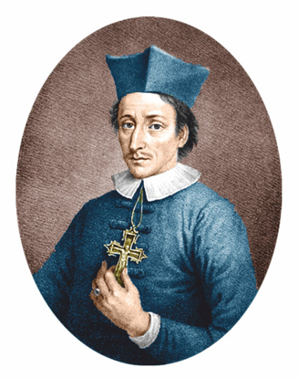
Chân phước Nicolaus Steno (1638–1686)
Linh mục · Giám mục · Bác sĩ
Nhà địa chất học · Nhà khoa học thần kinh · Nhà giải phẫu học
Bộ não — kiệt tác của tạo hóa — với chúng ta gần như vẫn là
một ẩn số.
Từ Aristotle đến Steno
Thế kỷ 4 TCN → thế kỷ 17
Thế kỷ 4 TCN
Aristotle
Tâm trí ở tim
Thế kỷ 3 TCN
Herophilus & Erasistratus
Giải phẫu não người
Thế kỷ 2
Galen
Não điều khiển cảm giác và vận động
Thế kỷ 5–15
Thuyết não thất
Gán chức năng cho ba khoang
1508–1543
Leonardo da Vinci & Vesalius
Quan sát cấu trúc trực tiếp
1664–1669
Willis & Steno
Quan sát và đo đạc
Suy đoán → giải phẫu → đo đạc
Aristotle: tâm trí nằm ở tim
Thế kỷ 4 TCN
Ông cho rằng tim tạo ra cảm xúc và tư duy; não chỉ có nhiệm vụ làm mát máu.
Lý do: tim đập nhanh khi ta xúc động, còn não thì lạnh và không co bóp.
Bài học Aristotle sai về vai trò của não, nhưng suy luận
từ những dấu hiệu ông quan sát được.
Aristotle và khái niệm “giác quan chung”
Thế kỷ 4 TCN📖 Tự học
Aristotle gọi khả năng kết hợp thông tin từ nhiều giác quan là giác quan chung
(sensus communis).
Câu hỏi ấy vẫn còn hiện đại: não gộp nhiều nguồn tín hiệu bằng cách nào?
Liên hệ với CNTT Đây là bài toán hợp nhất đa phương thức
(multimodal fusion).
Herophilus và Erasistratus
Thế kỷ 3 TCN📖 Tự học
Hai thầy thuốc Hy Lạp làm việc tại Alexandria vào thế kỷ 3 TCN.
Họ giải phẫu cơ thể người và mô tả não, não thất, màng não cùng các dây thần kinh.
Họ phân biệt hai lớp màng não; tên Latin tương ứng với màng mềm (pia mater) và
màng cứng (dura mater) xuất hiện về sau.
Galen nhận ra vai trò của não
Thế kỷ 2 SCN
Qua chấn thương của các đấu sĩ, Galen thấy tổn thương não làm mất cảm giác hoặc vận động.
Ông kết luận não, không phải tim, điều khiển hai chức năng này.
Nhưng ông vẫn cho rằng hoạt động của não do tinh khí động vật
(animal spirits) trong các não thất tạo ra.
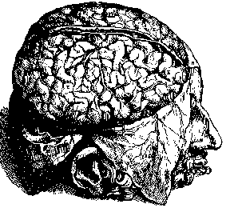
Vesalius kiểm tra lại Galen bằng giải phẫu trực tiếp (1543).
Galen xác định đúng vai trò của não nhưng giải thích sai cơ chế
Thế kỷ 4 TCN → thế kỷ 2 SCN
Tâm trí ở đâu?
Giải thích bằng gì?
Aristotle
Tim — sai
Khí sống (pneuma)
Galen
Não — đúng
Tinh khí động vật — sai
Bài học Đúng về vị trí chưa có nghĩa là đúng về cơ chế.
Thuyết ba não thất thời Trung cổ
Thế kỷ 5–15
Mỗi não thất được gán một chức năng:
Não thất trước — tiếp nhận và tưởng tượng.
Não thất giữa — suy luận.
Não thất sau — ghi nhớ.
Ghi nhớ Trước · giữa · sau = tưởng tượng · suy luận ·
ghi nhớ. Đây là một ví dụ sớm của tư duy định khu chức năng.
Người xưa gán chức năng cho ba não thất
Thế kỷ 5–15📖 Tự học
Não thất trước
Tiếp nhận và tưởng tượng
→
Não thất giữa
Suy luận
→
Não thất sau
Ghi nhớ
Chuỗi xử lý nghe hợp lý, nhưng vị trí các chức năng trong não là sai.
Các hình vẽ dựa trên lý thuyết thay vì quan sát
Thế kỷ 5–15📖 Tự học
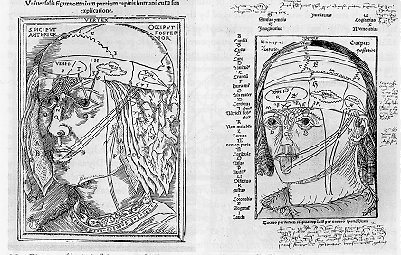
Tên chức năng được đặt vào từng khoang trong sọ.
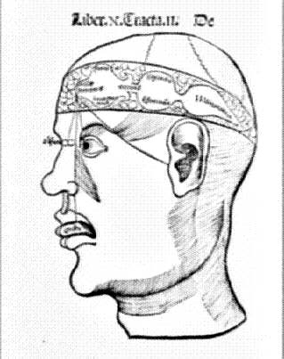
Ba khoang nối tiếp phản ánh lý thuyết đã có sẵn.
Thuyết não thất sai ở đâu?
Đối chiếu với hiện nay
Sai về vị trí Não thất là các khoang chứa dịch não tủy;
những chức năng trên không diễn ra trong các khoang ấy.
Điều đáng chú ý: họ đã thử gắn từng chức năng với một vị trí cụ thể.
Ngày nay, ta gọi cách đặt câu hỏi ấy là định khu chức năng
(functional localization).
Các học giả bất đồng vì thiếu dữ liệu
Thế kỷ 11–14📖 Tự học
Các học giả đặt “giác quan chung” ở những vị trí khác nhau trong não.
Họ có thể so sánh lập luận, nhưng chưa có quan sát giải phẫu để kiểm tra.
Vấn đề Không có dữ liệu mới, tranh luận không thể ngã
ngũ.
Leonardo da Vinci tạo mẫu đúc não thất
Khoảng 1508–1509📖 Tự học
Não thất nằm sâu trong mô mềm nên khó quan sát nguyên dạng.
Leonardo da Vinci bơm sáp lỏng vào các não thất của một bộ não đã được lấy ra khỏi cơ thể.
Sáp đông thành mẫu ba chiều của các não thất.
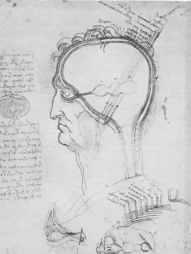
Bản vẽ thí nghiệm của Leonardo da Vinci, khoảng 1508–1509.
Berengario da Carpi kiểm tra lại mô tả của Galen
1521📖 Tự học
Không tìm thấy mạng mạch máu mà Galen mô tả ở đáy não người.
Dây thần kinh là cấu trúc đặc, không phải ống dẫn “tinh khí”.
Hai quan sát đặt nghi vấn về học thuyết “tinh khí” của Galen.
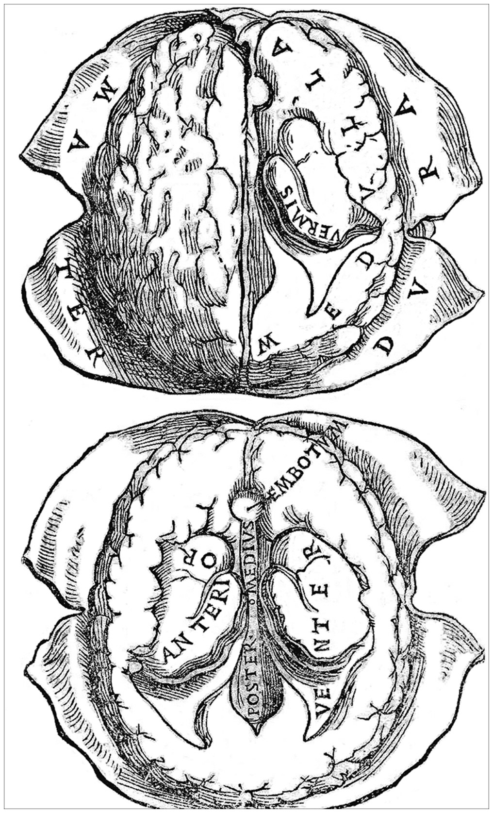
Hình não trong sách của Berengario, 1523. Nguồn: NLM.
Vesalius kiểm tra cấu tạo não người
1543
Cừu và bò có mạng động mạch nhỏ đan ở đáy não (rete mirabile).
Galen cho rằng mạng này có ở người và tạo “tinh khí”.
Andreas Vesalius giải phẫu và xác nhận: mạng mạch ấy không có ở người.
Bài học Cấu tạo quan sát được ở động vật chưa chắc
cũng có ở người.
“Tinh khí” không còn là lời giải
1664–1669
Thomas Willis (1664) và Nicolaus Steno (1669) bác bỏ ý tưởng rằng não
thất chứa “tinh khí động vật”.
Theo họ, một lời giải thích phải dẫn đến điều có thể quan sát hoặc kiểm tra.
Bài học Đặt tên cho điều chưa biết không phải là giải
thích.
Thomas Willis khảo sát mạch máu não
1664📖 Tự học
Nhóm của Thomas Willis bơm chất màu vào động mạch cảnh trên mẫu giải phẫu sau tử vong.
Chất màu đi theo lòng mạch, làm rõ đường đi và chỗ nối giữa các mạch máu não.
Cách hình dung Giống bơm nước màu vào mạng ống
để thấy các nhánh nối nhau.
Tra cứu hình giải phẫu
Thế kỷ 16📖 Tự học
Bartolomeo Eustachio đánh số ở mép hình giải phẫu.
Người đọc dò các mốc ngang, dọc để tìm đúng cấu trúc được mô tả trong sách.
Giống tra vị trí trên bản đồ.
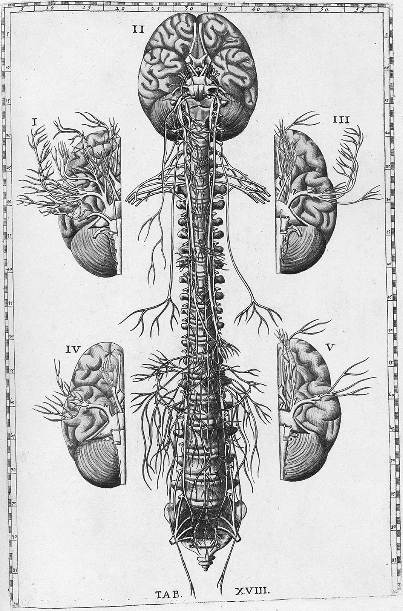
Thang số ở mép hình giúp người đọc tra vị trí.
Từ suy đoán sang quan sát và đo đạc
Thế kỷ 16–17
Ghi nhớ Từ thời Phục hưng, mô tả về não ngày càng
phải dựa trên mẫu vật, quan sát và phép đo.
Suy luận vẫn cần thiết, nhưng phải đi cùng bằng chứng có thể kiểm tra.
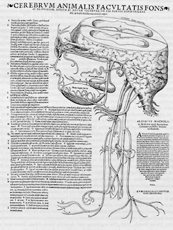
Vesalius, 1543: hình giải phẫu trực tiếp khác hẳn sơ đồ ba khoang thời Trung
cổ.
Liên hệ với TTNT: Giải thích thế nào là đủ?
Hiện nay
Câu hỏi
Nếu nói một mô hình “hiểu” hoặc “biết suy luận”, ta sẽ đo và kiểm tra nhận
định đó bằng cách nào?
Luôn hỏi: “Ta quan sát bằng gì? Kết quả nào sẽ cho thấy giả thuyết sai?”
Thông tin nào cần để giải bài toán?
Hiện nay
Đề A
Lan có 12 quả táo, mua thêm 8 quả.
Lan có tất cả bao nhiêu quả táo?
Đề B
Lan có 12 quả táo, mua thêm 8 quả.
Trong 8 quả vừa mua, có 3 quả nhỏ hơn những quả còn lại.
Lan có tất cả bao nhiêu quả táo?
Ví dụ để thử mô hình, chưa phải kết quả thực nghiệm.
Kết quả cho phép kết luận điều gì?
Hiện nay
Cả hai đề đều có đáp án 20 quả.
Nếu đề A đúng nhưng đề B trả lời 17 quả, mô hình đã trừ 3 quả mà đề không yêu cầu bỏ đi.
Cần thử nhiều đề tương tự để biết lỗi có lặp lại hay không.
Giới hạn của kết luận
Một câu trả lời sai chưa đủ để kết luận mô hình hoàn toàn không biết suy luận.
Tham khảo cách kiểm tra: GSM-Symbolic,
Iman Mirzadeh và cộng sự (2024).
4. Cách mạng nhận thức
Từ giữa thế kỷ 20, các nhà nghiên cứu dùng thí nghiệm và mô hình tính toán để giải thích tâm trí.
Chủ nghĩa hành vi
Đầu đến giữa thế kỷ 20
Chủ nghĩa hành vi (behaviorism) tập trung giải thích hành vi bằng môi trường và kinh nghiệm học tập.
Ưu tiên những gì có thể quan sát và đo được.
Nghiên cứu kích thích, phản ứng và hậu quả của hành vi.
Hai đại diện: John Watson và B. F. Skinner.
Học qua liên kết và qua hậu quả
Đầu đến giữa thế kỷ 20📖 Tự học
Ivan Pavlov: sau nhiều lần âm thanh đi kèm thức ăn, chó tiết nước bọt khi chỉ nghe âm thanh.
B. F. Skinner: trong hộp thí nghiệm, chuột ấn cần gạt thì nhận được thức ăn. Sau nhiều lần, chuột ấn cần thường xuyên hơn.
Điều có thể đo
Lượng nước bọt và số lần chuột ấn cần gạt cho thấy phản ứng thay đổi qua quá trình học.
Liên hệ với học tăng cường
Đối chiếu với hiện nay
Học tăng cường (reinforcement learning): tác nhân học cách hành động qua tương tác và tín hiệu phần thưởng.
Điểm liên hệ với Skinner: hậu quả của hành động ảnh hưởng đến cách hành động về sau.
Câu hỏi
Một chương trình học tốt nhờ phần thưởng có chứng minh rằng con người chỉ học theo cách đó không?
Thưởng và phạt có giải thích đủ không?
Giữa thế kỷ 20
Trẻ có thể nói một câu chưa từng nghe nguyên vẹn.
Ta có thể nhớ đường dù không được thưởng khi học đường.
Ta dùng kinh nghiệm cũ để tìm cách giải một bài toán mới.
Câu hỏi nghiên cứu
Con người lưu giữ và sử dụng kinh nghiệm như thế nào?
Nghiên cứu sự chú ý khi trực radar
Thập niên 1940📖 Tự học
Người trực radar có thể bỏ sót tín hiệu khi phải theo dõi màn hình trong thời gian dài.
Đo tỷ lệ phát hiện đúng và tỷ lệ bỏ sót theo thời gian.
Thử thay đổi thời gian nghỉ hoặc cách trình bày tín hiệu.
Sự chú ý không nhìn thấy trực tiếp, nhưng có thể nghiên cứu qua kết quả thực hiện nhiệm vụ.
Mô hình xử lý thông tin
Thập niên 1930 đến 1950
Alan Turing mô tả cách thực hiện phép tính bằng các bước xác định.
Claude Shannon xây dựng cách đo lượng thông tin và giới hạn truyền tin.
Các nhà tâm lý học mô hình hóa cách con người tiếp nhận, lưu giữ và xử lý thông tin.
Mô hình phải dự đoán được kết quả thí nghiệm, chẳng hạn số mục nhớ đúng hoặc thời gian trả lời.
Đề xuất ngữ pháp phổ quát: giả thuyết về nền tảng bẩm sinh giúp trẻ học ngôn ngữ.
Vì sao ta hiểu được một câu mới?
1959
Bạn có thể hiểu câu: “Con mèo tím đang đọc bản đồ trên Mặt Trăng.”
Bạn có thể chưa từng nghe nguyên câu này.
Nhưng bạn biết các từ và cách chúng kết hợp thành câu.
Ta không chỉ lặp lại những câu đã nghe, mà còn có thể tạo và hiểu những câu mới. Chomsky cho rằng lý thuyết về ngôn ngữ phải giải thích được khả năng này.
Bạn cần laptop để học, giá dưới 15 triệu. Không đủ thời gian xem mọi mẫu, bạn so sánh vài chiếc và chọn chiếc đáp ứng yêu cầu. Đó là chọn phương án đủ tốt, dù chưa biết có chiếc nào tốt hơn trong tầm giá.
Sự chú ý có giới hạn
1971📖 Tự học
Thông tin thì nhiều, nhưng ta không thể dành sự chú ý cho tất cả.
Nguyên văn: “a wealth of information creates a poverty of attention”
Đọc và xử lý thông tin đều cần thời gian.
Có thêm thông tin chưa chắc giúp quyết định tốt hơn nếu ta không chọn được thông tin cần thiết.